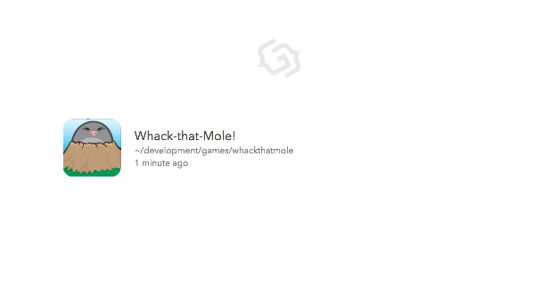
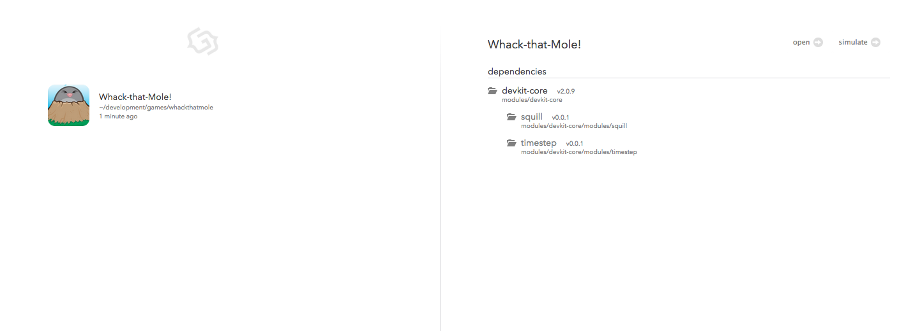
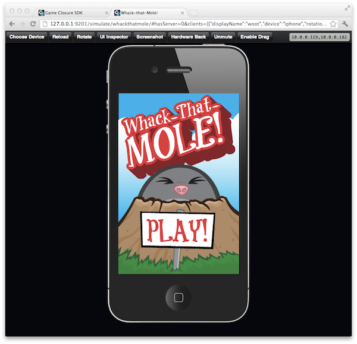
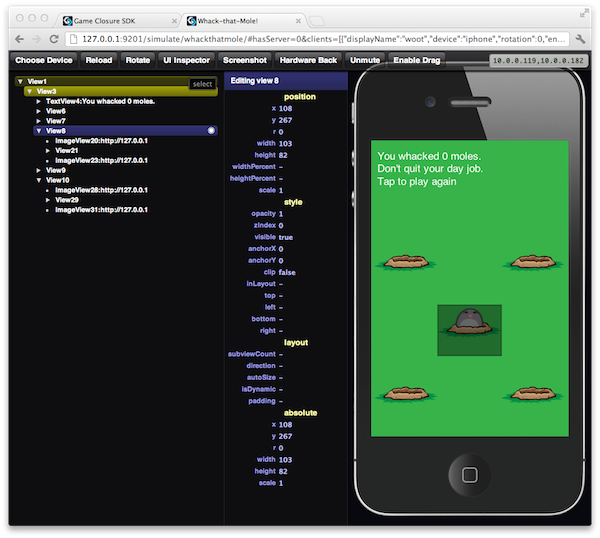
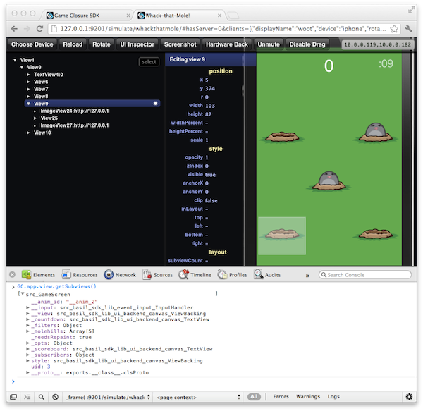
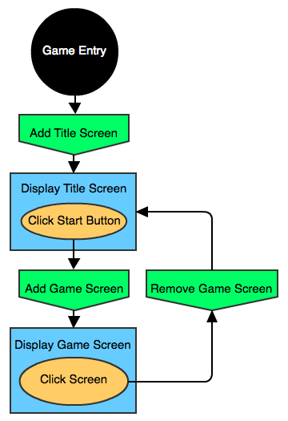
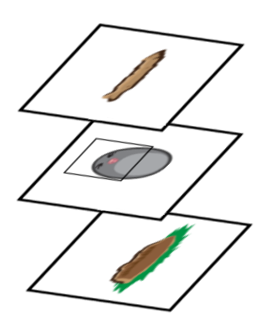

3. Quick Start: Game Walk-Through
Whack That Mole! is a basic, non-trivial, game built using the Game Closure DevKit. The source code is available and in this guide we’ll step through it to see how the components of the Game Closure DevKit fit together.
This walk-through assumes that you have the Game Closure DevKit up and running. See the Quick Start Guide for details on how to get set up.
Game Install
Clone the Whack a Mole Example from github.
git clone https://github.com/gameclosure/whack-that-mole/ whackthatmoleInstall devkit inside the Whack that Mole project.
cd whackthatmole
devkit installRun the devkit server from the command-line:
$ devkit serveThis will start a server on your machine on port 9200. Navigate your web browser to http://localhost:9200 and you’re greeted with the following screen:

First, we need to select our project: click on the Projects link in the left nav and select the Whack-that-Mole! game:

With the game icon selected, click the Simulate button in the top right to launch the game in a new web browser tab.

The game is now running in the browser simulator! On the title screen, click the Play button to begin. The game is simple enough, just whack the moles when they peak out of their holes in the ground. After 20 seconds or so, the game ends and your score is displayed. Then simply click anywhere on the screen to return back to the title screen.
Browser Debugging
One of the keys to a great developer experience is great debugging tools. There has been a lot of effort put into the developer environment of the Game Closure DevKit so that it’s easy to get up and running, and easy to see how the code in your game works. With your game running in the browser, not only do you get access to all the great development tools provided by the browser, but your speed of development increases because your feedback loop is quicker. You get to see how your game changes immediately in the browser, instead of spending valuable development time waiting to compile and upload code to a mobile device.
UI Inspector
One of the nice tools we provide is the UI Inspector. This lets the developer get a top-down look of the game’s scene graph, to see exactly how all the views fit together. You can target a particular view by navigating through the menu tree, or by simply hovering over a view in the simulator. You can then inspect the properties of the selected view, and even alter these properties right in the inspector. Since these effects will be instantly seen in the game, you can make user interface and game play adjustments instantaneously, rather than waiting through a lengthy feedback loop of reloading the entire browser page.

Browser Debugging Tools
One of the great things about working with JavaScript is the great debugging tools that modern web browsers have built-in. In the Chrome browser, you can access the developer tools by clicking the control settings icon in the upper right corner, then Tools > JavaScript Console. This will open up a console where you can type in JavaScript commands to your game:

To access the JavaScript variables in your game’s context you’ll need to switch from the <top frame> console frame to the game’s frame Simulator_0, this option is selectable on the bottom of the console window.
Once you’re in the proper context, at the console type:
> GC.app.viewThis will return a reference to the root node of the scene graph. From there you can view and alter its properties, or even traverse the view hierarchy and access any of its children.
Class System
We’ll be structuring this game in to multiple files using our class and module system. We will discuss the system throughout this document, but the implementation details are available in the documentation.
Project Structure
A game created with the Game Closure DevKit has this basic file structure:
.
├── manifest.json
├── modules/
└── devkit-core
├── resources/
└── src
└── Application.jsThere is the manifest.json file located in the project directory which contains our project’s configuration options, the src directory containing our application code, and the resources directory where the game assets are stored.
The game’s manifest can contain any number of project specific configuration options in JSON format. A typical, minimal manifest.json file has a generated application ID hash, a name, and perhaps the device orientation of the game. This file is usually generated by devkit, but can be edited by hand. For example, this could be the manifest.json file used by our game:
{
"appID": "abcdefghijklmnopqrstuvwxyz012345",
"shortName": "whackthatmole",
"title": "Whack-that-Mole!",
"supportedOrientations": [
"portrait"
]
}You can find a complete list of manifest options in the documentation.
There is also a modules directory, which is where devkit installs the devkit-core runtime and any additional dependencies listed in your manifest.
The resources directory provides a place to store game assets, like images and sound files.
The JavaScript code we’ll develop for our game is located in the src directory. The entry point for the game is the ./src/Application.js file, which defines an object that inherits from the GC.Application class. This object has a number of options that you can find in its API documentation.
Game Flow
Before diving into the implementation details of Whack-that-Mole!, let’s take a top-down look at the application and get an overview of how the game flows together.

First, the Game Closure DevKit is initialized and the environment is set up for the user’s application. The entry point for the game is the ./src/Application.js file in the project’s directory. This file initializes all of the game screens and manages the events for moving between them.
The application uses a View Stack for pushing on—and popping off—game screens. When the game is started, the title screen is pushed onto the stack. This displays the screen graphics and awaits user input to begin the game. This screen is defined in the ./src/TitleScreen.js file.
When the user taps the play button, the game play screen is then pushed onto our screen stack. The game play screen is responsible for setting up the game assets and interface, then starting, playing, and ending the game. This is defined in the ./src/GameScreen.js file.
When the game ends, the user’s score is displayed and the game screen holds while we await user input to continue. Upon receiving that tap, the game screen is popped off the screen stack, revealing the title screen. The game returns to the title screen and, as before, awaits to be played again.
Game Structure
The complete file structure of our project can be see here:
.
├── manifest.json
├── modules
│ └── devkit-core ...
├── resources
│ ├── images
│ │ ├── hole_back.png
│ │ ├── hole_front.png
│ │ ├── icon.png
│ │ ├── mole_hit.png
│ │ ├── mole_normal.png
│ │ └── title_screen.png
│ └── sounds
│ ├── effect
│ │ └── whack.mp3
│ └── music
│ └── levelmusic.mp3
└── src
├── Application.js
├── GameScreen.js
├── MoleHill.js
├── TitleScreen.js
└── soundcontroller.jsThe logic of our game is contained in the files located in the ./src directory, which we’ll look at now.
The Entry Point: Application.js
Once the Game Closure DevKit environment is initialized, the game picks up in your project’s ./src/Application.js file. In Whack-that-Mole!, this file is rather short, and its purpose is to initialize the title screen and game screen and handle events for directing the game flow.
/*
* The main application file, your game code begins here.
*/
// devkit imports
import device;
import ui.StackView as StackView;
// user imports
import src.TitleScreen as TitleScreen;
import src.GameScreen as GameScreen;
import src.soundcontroller as soundcontroller;
/* Your application inherits from GC.Application, which is
* exported and instantiated when the game is run.
*/
exports = Class(GC.Application, function () {
/* Run after the engine is created and the scene graph is in
* place, but before the resources have been loaded.
*/
this.initUI = function () {
var titlescreen = new TitleScreen(),
gamescreen = new GameScreen();
this.view.style.backgroundColor = '#30B040';
//Add a new StackView to the root of the scene graph
var rootView = new StackView({
superview: this,
x: device.width / 2 - 160,
y: device.height / 2 - 240,
width: 320,
height: 480,
clip: true,
backgroundColor: '#37B34A'
});
rootView.push(titlescreen);
var sound = soundcontroller.getSound();
/* Listen for an event dispatched by the title screen when
* the start button has been pressed. Hide the title screen,
* show the game screen, then dispatch a custom event to the
* game screen to start the game.
*/
titlescreen.on('titlescreen:start', function () {
sound.play('levelmusic');
rootView.push(gamescreen);
gamescreen.emit('app:start');
});
/* When the game screen has signalled that the game is over,
* show the title screen so that the user may play the game again.
*/
gamescreen.on('gamescreen:end', function () {
sound.stop('levelmusic');
rootView.pop();
});
};
/* Executed after the asset resources have been loaded.
* If there is a splash screen, it's removed.
*/
this.launchUI = function () {};
});At the top of this file, two modules from the DevKit and three additional source files are imported in to our project using the import statement:
// devkit imports
import device;
import ui.StackView as StackView;
// user imports
import src.TitleScreen as TitleScreen;
import src.GameScreen as GameScreen;
import src.soundcontroller as soundcontroller;These files have been written as modules and are assigned to variables within this file.
Note that this Application.js file is also a module, it’s a class that inherits from GC.Application using the Class function (see the Class docs for more info). This new class is then assigned to the exports object, a predefined object within each module file that is returned when another file imports this one. When our application is instantiated, it’s assigned to the global property GC.app, which can be accessed anywhere in your game code. Since you are only going to have one application in your game, you can just think of this as a singleton. Within the application’s class definition function, you can refer to it using the this object. A working—bare-bones—Application.js file can look like this:
The device module contains information about the physical device running the application. We can use this to obtain information about the browser window, or even a native mobile application depending on where your game is running. You can view a complete list of device properties in the documentation.
exports = Class(GC.Application, function () {
// class definition goes here ...
// this === GC.app //=> true
});The GC.Application class is special in that it has two callback functions, initUI and launchUI, that it checks for and runs when ready—this is where we’ll hook in our main game code. The initUI function is run after the Game Closure engine is created and the scene graph is ready. When the launchUI function is called, the splash/loading screen is removed if one is defined.
Creating the Screens
After our game screen classes have been imported at the top of our file, we instantiate them in the initUI function. This is when our game engine is ready.
var titlescreen = new TitleScreen(),
gamescreen = new GameScreen();We’ll look in detail about how these screens are constructed in the next couple of sections.
When the scene graph for the game engine is created, its root node is stored at GC.app.view. Any View that is attached as a child to this node, or its descendants, can be rendered to the screen. The root view is a little special because it’s an instance of ui.StackView, which is a subclass of ui.View. It has additional functionality for pushing and popping child views and transitioning between them.
You can also see that there is some simple sound code in here, but we’ll look at that towards the end of this guide. The soundcontroller module returns a AudioManager singleton, which we use to play the level music when we transition to the game screen.
Event Management
In the event handling code, we listen for the game start and end events on our two screens and manage our root StackView:
titlescreen.on('titlescreen:start', function () {
//...
GC.app.view.push(gamescreen);
gamescreen.emit('app:start');
});
gamescreen.on('gamescreen:end', function () {
//...
GC.app.view.pop();
});When the event to start the game is received, the game screen is pushed on to the rootView stack view. There is no need to remove the title screen already in the stack, the game screen is simply “on top” of it and becomes the visible view of the application. By default, pushing another view to the StackView has a side-scrolling animation transition, this can be turned off. We’ll look at the details of the game’s event flow in a moment as we step through the title screen.
The Game Awaits: TitleScreen.js
With our application framework in place, let’s see how the title screen is constructed. The screen is an instance of the TitleScreen class, defined in the ./src/TitleScreen.js file. It is instantiated once in ./src/Application.js and added to the root view where it remains throughout the lifetime of the application.
Anatomy of a View
The view hierarchy structure of the TitleScreen class is relatively simple. There is a single background image that fits the screen, and an “invisible” child view placed over the portion of the background image designated as the play button. This button will detect an input event, then signal to the main application that the user is ready to start the game. Since this is such a small class, we’ll look at the file in its entirety here, then break down it’s component pieces:
import ui.View;
import ui.ImageView;
exports = Class(ui.ImageView, function (supr) {
this.init = function (opts) {
opts = merge(opts, {
x: 0,
y: 0,
image: "resources/images/title_screen.png"
});
supr(this, 'init', [opts]);
var startbutton = new ui.View({
superview: this,
x: 58,
y: 313,
width: 200,
height: 100
});
startbutton.on('InputSelect', bind(this, function () {
this.emit('titlescreen:start');
}));
};
});First, we need to import the classes and modules that are used within this class:
import ui.View;
import ui.ImageView;ui.View is a class used as the basic display object for rendering elements to the screen. To do this, a view must be attached to the game’s scene graph (a hierarchy of view nodes). Views have style properties which control how they are rendered to the screen, they can emit and subscribe to events, and they have methods for adding and removing their subviews and superviews. The details of the ui.View properties and methods can be found in the documentation, with example uses.
ui.ImageView is a subclass of ui.View. Along with the properties it inherits from the base View, ImageView has additional methods for setting an image to be used within a view. Check the ImageView API for more details.
Now that we have imported our dependencies, we can define our TitleScreen class. Here we use the Class function to define our screen module as a sub-class of the ui.ImageView type:
exports = Class(ui.ImageView, function (supr) {
this.init = function (opts) {
opts = merge(opts, {
//...
});
supr(this, 'init', [opts]);
};
});Each class defined by the Class function has an init method which is executed when a new object is instantiated, or in this case when new TitleScreen is called. Within this initialization example, the merge utility function is used to consolidate the default options set in the class with the options properties passed to the constructor, you can see how this function works in the Utilities API. Then we initialize the underlying superclass by calling the init method of this superclass and passing it the merged options object. Here’s the complete init function:
this.init = function (opts) {
opts = merge(opts, {
x: 0,
y: 0,
image: "resources/images/title_screen.png"
});
supr(this, 'init', [opts]);
this.build();
};The title_screen.png image file is loaded as the image option for ui.ImageView.
The supr function is provided as an argument to the class definition by the Class function. As parameters it takes the object, a method name on the object to execute, and an array of arguments to apply to this function. Since opts is a single object, it’s wrapped in a new array before passing it to supr.
The Play Button
Remember the build function we invoke at the end of init? Here’s what it does:
this.build = function() {
var startbutton = new ui.View({
superview: this,
x: 58,
y: 313,
width: 200,
height: 100
});
startbutton.on('InputSelect', bind(this, function () {
this.emit('titlescreen:start');
}));
};For the title screen, we create our “invisible” start button and position it exactly over the correct portion of the background image. The view is attached as a child to the instance of the TitleScreen by passing this as the superview option. Then we attach an InputSelect listener to capture user clicks and taps. Here we emit a title screen start event, which we listen for in this view’s parent, the Application.js file. For more info on input events, see the input Event Docs.
Event Flow
You just saw how the start button captures user input and propagates this to the main application. Here’s an overview of the entire event flow of the game. You’ll see the rest of these events later, but for now here’s how the player is moved through the game using these events:

After the application is created and the game screens are set up, the player enters at the title screen. Upon clicking the start button, the 'titlescreen:start' event is emitted and captured at the top-level of the application. From there, the game play screen is added, the user plays the game, and then the 'gamescreen:end' event is emitted back to the application. Here the application removes the game screen, and the player is dropped back to the title screen right where they began.
The Game Begins: GameScreen.js
The GameScreen class is defined in the ./src/GameScreen.js file and is the longest of the project. Fortunately, much of that code is for building its child view hierarchy, a process that we already looked at in detail in the previous section. Beyond setting up child views and game assets, there are functions for defining the flow for the player starting and playing the game, and then the end game sequence that displays the score. You can view the file in it’s entirety on GitHub, but we’ll look at the important sections here.
Set up the screen
Like our previous files, we import the classes and modules that are required for this file:
import animate;
import device;
import ui.View;
import ui.ImageView;
import ui.TextView;
import src.MoleHill as MoleHill;Since you’ve already seen ui.View, ui.ImageView, and device, let’s look at the others.
You can probably guess what ui.TextView does, it’s simply a view that allows you to display text on the screen. This is helpful for scores, labels, and anything else that people read. In addition to the style properties for regular views, you can configure font size and color for TextViews. For a full list of TextView properties, check out the API.
animate is a module used for animating views, objects, and style properties. This is a “tweening engine” used to interpolate between screen positions. Most importantly, since it can be optimized for native devices, you should favor this module over manual calculations within the game loop. We’ll look its usage and syntax in more detail as we come across it.
The final import statement in this file is a little more interesting:
import src.MoleHill as MoleHill;The class src.MoleHill is a reference to the ./src/MoleHill.js class located in our project directory. Besides the classes and modules defined in the DevKit, user defined classes and modules can be imported into the game. Here the as command is used to alias the src.MoleHill to simply the MoleHill object. You can use this for any import statement but it’s especially handy for user-defined classes with long path names. For more information on the import command, see the docs.
Like TitleScreen, the GameScreen class is instantiated only once, in the Application.js file. Its init function defines options for its dimensions to match the device dimensions, as well as setting a green background color that will serve as our grass. We initialize our superclass by passing in the options to the supr function.
this.init = function (opts) {
opts = merge(opts, {
x: 0,
y: 0,
width: 320,
height: 480,
backgroundColor: '#37B34A'
});
supr(this, 'init', [opts]);
this.build();
};
this.build = function() {
this.on('app:start', bind(this, start_game_flow));
this._scoreboard = new ui.TextView({
superview: this,
x: 0,
y: 15,
width: device.width,
height: 50,
autoSize: false,
size: 38,
verticalAlign: 'middle',
textAlign: 'center',
multiline: false,
color: '#fff'
});
var x_offset = 5;
var y_offset = 160;
var y_pad = 25;
var layout = [[1, 0, 1], [0, 1, 0], [1, 0, 1]];
this._molehills = [];
//loop over the layout grid, row then column
for (var row = 0, len = layout.length; row < len; row++) {
for (var col = 0; col < len; col++) {
//if there was a 1 in the grid, create a mole
if (layout[row][col] !== 0) {
var molehill = new MoleHill();
molehill.style.x = x_offset + col * molehill.style.width;
molehill.style.y = y_offset + row * (molehill.style.height + y_pad);
this.addSubview(molehill);
this._molehills.push(molehill);
//update score on hit event
molehill.on('molehill:hit', bind(this, function () {
if (game_on) {
score = score + hit_value;
this._scoreboard.setText(score.toString());
}
}));
}
}
}
this._countdown = new ui.TextView({
superview: this._scoreboard,
visible: false,
x: 260,
y: -5,
width: 50,
height: 50,
size: 24,
color: '#fff',
opacity: 0.7
});
};This is a little longer than some of our previous build functions, but it’s easily understood. First, a listener is attached for an 'app:start' event which will start the game. This is dispatched from the root of our application, after the start button click event was handled, and executes the start_game_flow function. Under that we create a score board and define the position and layout of the mole hills on the device’s screen. We then create a number of MoleHill objects (five in this example), add them as a subview to this GameScreen instance, and attach an event handler to each one which updates the score on registering a hit. The MoleHill class is defined in the file ./src/MoleHill.js and we’ll look at that soon. Basically, it’s a collection of images that are composited to show mole poking his head out of its hill, and their animation functions.
With the mole hills in place, all that’s left to do is set up the countdown TextView, this is attached to the score board we created above.
Starting sequence
With the child views set, we can now step through starting, playing, and ending the game.
Within the init constructor, we add listener function to handle the 'app:start' event that was dispatched from the top-level of our application. It then calls start_game_flow which plays the introductory animation sequence, then starts the game play by calling play_game:
function start_game_flow () {
var that = this;
animate(that._scoreboard).wait(1000)
.then(function () {
that._scoreboard.setText(text.READY);
}).wait(1500).then(function () {
that._scoreboard.setText(text.SET);
}).wait(1500).then(function () {
that._scoreboard.setText(text.GO);
//start game ...
game_on = true;
play_game.call(that);
});
}The "Ready, Set, Go!" message is displayed sequentially, with a brief pause between words. At the end of each pause, the text of the score board is updated and another animation step is added. In the final step, the game is started by executing play_game.call(that); we apply the that object (which is just a reference to this) so the proper context is referenced in the subsequent function.
Game play
With everything set up, there’s not much to the actual game play. It consists of setting up a few timers; the tick function picks a random mole to animate out of its hole, another timer to update the countdown TextView each second, and then some timeouts for setting up and ending the game:
function play_game () {
var i = setInterval(bind(this, tick), mole_interval),
j = setInterval(bind(this, update_countdown), 1000);
//when the game is up reset all timers, flags and countdown
setTimeout(bind(this, function () {
game_on = false;
clearInterval(i);
clearInterval(j);
setTimeout(bind(this, end_game_flow), mole_interval * 2);
this._countdown.setText(":00");
}), game_length);
//Make countdown timer visible, remove start message if still there.
setTimeout(bind(this, function () {
this._scoreboard.setText(score.toString());
this._countdown.style.visible = true;
}), game_length * 0.25);
//Running out of time! Set countdown timer red.
setTimeout(bind(this, function () {
this._countdown.updateOpts({color: '#CC0066'});
}), game_length * 0.75);
}
function tick () {
//choose a mole by random
var len = this._molehills.length,
molehill = this._molehills[Math.random() * len | 0];
//choose another if it's already active
while (molehill.activeMole) {
molehill = this._molehills[Math.random() * len | 0];
}
molehill.showMole();
}
function update_countdown () {
countdown_secs -= 1;
this._countdown.setText(":" + (("00" + countdown_secs).slice(-2)));
}Ending sequence
After the game timer is over, the game ends and the ending animation sequence begins—this is coordinated in the end_game_flow function. The end game sequence checks if a new high score has been set, and displays a closing message based on that. An ending animation is played by popping up the mole and alternating between hit image states, giving the appearance that he is laughing at you.
function end_game_flow () {
var isHighScore = (score > high_score),
end_msg = get_end_message(score, isHighScore);
this._countdown.setText(''); //clear countdown text
//resize scoreboard text to fit everything
this._scoreboard.updateOpts({
text: '',
x: 10,
size: 17,
verticalAlign: 'top',
textAlign: 'left',
multiline: true
});
//check for high-score and do appropriate animation
if (isHighScore) {
high_score = score;
this._molehills.forEach(function (molehill) {
molehill.endAnimation();
});
} else {
var i = (this._molehills.length-1) / 2 | 0; //just center mole
this._molehills[i].endAnimation(true);
}
this._scoreboard.setText(end_msg);
//slight delay before allowing a tap reset
setTimeout(bind(this, emit_endgame_event), 2000);
}Once the new score board message is set and the mole animation is underway, a two second timeout is created that adds a one-time event handler to listen for the user to touch the screen:
function emit_endgame_event () {
this.once('InputSelect', function () {
this.emit('gamescreen:end');
reset_game.call(this);
});
}When the screen is clicked, the game is reset and a 'gamescreen:end' event is emitted and handled in the top-level application. From there, this game screen is pushed off the view stack, revealing the title screen ready for the user to play again.
An Important Asset: MoleHill.js
The MoleHill class is another larger class, and again we won’t look at it in complete detail since you’ve already seen how views work. For a complete listing of the ./src/MoleHill.js file, you can browse it online.
Aligning the components
At a high level, a single mole hill is a collection of three image assets stacked one on top of the next: the back of the mole hill, the mole, and the front of the mole hill. By animating the mole up and down on the y-axis and giving it a clipping rectangle to mask it out beyond certain dimensions, the mole will appear like it’s “jumping” out of the ground, and ready to be whacked!
this.build = function () {
var hole_back = new ui.ImageView({
superview: this,
image: hole_back_img,
//...
});
this._inputview = new ui.View({
superview: this,
clip: true,
//...
});
this._moleview = new ui.ImageView({
superview: this._inputview,
image: mole_normal_img,
//...
});
var hole_front = new ui.ImageView({
superview: this,
canHandleEvents: false,
image: hole_front_img,
//...
});
//...
this._inputview.on('InputSelect', bind(this, function () {
if (this.activeInput) {
sound.play('whack');
this.emit('molehill:hit');
this.hitMole();
}
}));
};Here, you can visualize how the component ImageView’s are stacked together to make a single mole hill:

Since the body of the mole extends below the front molehill image, the illusion of the mole diving into the ground will be ruined unless we can show only the section of the mole’s body that is above the ground line. This can be done by creating a new View and using it as a clipping mask. Just set the clip option on the view to true, and any child views attached to it will display only the regions within the boundaries of the clipping view. In the above diagram, the clipping view for the mole is represented in the middle layer as the square drawn on top of the mole.
We’re also going to use this clipping view as a button region to test if a hit has been registered on a mole. Any tap within its bounding area, when the mole is active, will count as a hit and update the score. But, we have a problem. The view used to capture user input is obscured by the ImageView displaying the front of the mole hill, and therefore any clicks on the screen area where the mole is located will be captured by the hole_front view, and these will not propagate to the _inputview, which is where we need to register the event. We can avoid this by setting the canHandleEvents option to false on the hole_front view which covers our intended input view. This allows events to “pass through” the view so the views positioned underneath will receive the input instead.
Also in the build function, an Animator object is created that references the _moleview child, which is the ImageView of the mole’s body:
this._animator = animate(this._moleview);This creates a reference to an animation object that we will call over the course of the game. We could execute animate(this._moleview) each time we need to animate a property on the view, but that wouldn’t be as efficient. Having a reference to this object attached to the view means we can access it whenever we need it and not have to create a new Animator instance for each animation.
Animating the mole
Three animation sequences are defined on the MoleHill class: the mole popping up out of its hole, the mole lowering back in to its hole, and an ending animation which raises the mole up slowly and makes him laugh at you. These are defined in the following methods using the Animator object we just created:
this.showMole = function () {
if (this.activeMole === false) {
this.activeMole = true;
this.activeInput = true;
this._animator.now({y: mole_up}, 500, animate.EASE_IN)
.wait(1000).then(bind(this, function () {
this.activeInput = false;
})).then({y: mole_down}, 200, animate.EASE_OUT)
.then(bind(this, function () {
this.activeMole = false;
}));
}
};
this.hitMole = function () {
if (this.activeMole && this.activeInput) {
this.activeInput = false;
this._animator.clear()
.now((function () {
this._moleview.setImage(mole_hit_img);
}).bind(this))
.then({y: mole_down}, 1500)
.then(bind(this, function () {
this._moleview.setImage(mole_normal_img);
this.activeMole = false;
this.activeInput = false;
}));
}
};
this.endAnimation = function () {
this.activeInput = false;
this._animator.then({y: mole_up}, 2000)
.then(bind(this, function () {
this._interval = setInterval(bind(this, function () {
if (this._moleview.getImage() === mole_normal_img) {
this._moleview.setImage(mole_hit_img);
} else {
this._moleview.setImage(mole_normal_img);
}
}), 100);
}));
};The animate function interpolates values on a JavaScript object property, and if passed a View will interpolate the values on its style property. This is provided as a convenience since most likely these are the properties you’ll want to animate.
For an example, let’s step through the animation sequence of popping a mole out if its hole. The following is from the showMole method:
this._animator.now({y: mole_up}, 500, animate.EASE_IN)
.wait(1000).then(bind(this, function () {
this.activeInput = false;
})).then({y: mole_down}, 200, animate.EASE_OUT)
.then(bind(this, function () {
this.activeMole = false;
}));The first step here is the animator’s call to .now({y: mole_up}, 500, animate.EASE_IN), which immediately operates on the y property on the animator object, and is defined as the this._moleview view. Because the subject of the animation is an instance of a View class, we’re actually operating on its style.y property, or the vertical position of the mole image on the screen. The mole_up variable, set to 5 at the top of the file, is the offset relative to its parent view this._inputview. The first part of this animation will take half a second, or 500 milliseconds, and ease in to the final position. When this completes, the mole will be peeking his head out of the hole.
At this point, the second phase of the animation is run .wait(1000). This pauses the animation sequence for one second before moving on to the next item in the sequence. Visually, this makes the mole stand up for a moment before darting back in to his hole. If the mole is tapped within this time, a hit is registered and the user’s score increases.
Now, the command .then( ... ) is called. It’s passed a callback function which gets run immediately. The function sets the activeInput property of the mole hill to false, which means the mole is no longer eligible to receive hits. When that action is completed, the animation moves on to the next item in the sequence.
We now want the mole to dive back into its hole, so we issue the command .then({y: mole_down}, 200, animate.EASE_OUT). As we’ve seen, the .then function can be called in a multitude of ways. Here we’re passing it the same arguments as the previous .now() call. This lowers the mole back down on the y-axis in 200 milliseconds, easing out of its starting position and stopping below the ground line of the hill.
When the lowering animation is complete, we issue the final command in the animation sequence: .then( ... ) supplied with a callback function to set the activeMole property of the mole hill to false. The sequence has now finished.
Sound
The sound is added to our game using a singleton controller located in the file ./src/soundcontroller.js:
import AudioManager;
exports.sound = null;
exports.getSound = function () {
if (!exports.sound) {
exports.sound = new AudioManager({
path: 'resources/sounds',
files: {
levelmusic: {
path: 'music',
volume: 0.5,
background: true,
loop: true
},
whack: {
path: 'effect',
background: false
}
}
});
}
return exports.sound;
};Here we create a single AudioManager object when the application is launched and return this object whenever getSound is called throughout the game. The details of loading and playing sounds can be found in the API.
To see how sound is used in this game, we’ll look back at our ./src/Application.js file and its initUI function:
this.initUI = function () {
//...
var sound = soundcontroller.getSound();
//...
titlescreen.on('titlescreen:start', function () {
sound.play('levelmusic');
GC.app.view.push(gamescreen);
GC.app.emit('app:start');
});
gamescreen.on('gamescreen:end', function () {
sound.stop('levelmusic');
GC.app.view.pop();
});
};After the start button has been pressed, the titlescreen:start event is captured and the handler plays the background music for the level. The audio file will continue playing throughout the duration of the game play, and will loop if the clip runs to the end if specified in the loading options for levelmusic, loop: true. This is all set up when we create our sounds with new AudioManager(...) in ./src/soundcontroller.js.
Where To Go From Here?
Before we set you loose, we have a few suggestions for how to avoid some common pitfalls when writing JavaScript games. First off you’ll want to use the Chrome debugging tools. Secondly: Be sure not to try to delete Views after you create them since it is easy to make mistakes. Finally, consider using the blockEvents property to improve performance.
Debugging Tools
With the Chrome browser you already have a great set of JavaScript debugging tools when you’re using the web simulator. Check out the Google Developers page for Chrome Developer Tools to get more information on how to make the most of the toolset.
You are able to set breakpoints, step, and inspect any of your JS variables. Chrome also has the best heap and CPU profiling tools available in our opinion and makes finding performance hotspots easy.
Reuse Views: Avoiding JavaScript Memory Leaks
JavaScript memory leaks can cause headaches down the road when you start running your game on the memory constrained devices. The most common symptom is that the game will “freeze” on the device and never recover.
Through making many games we have found that the most common way to leak memory is by trying to remove and recreate View objects. It would be a bad idea, in our experience, to create a View in response to a button press. The easy solution to avoid JavaScript memory leaks is to never attempt to remove or recreate a View.
The menu system for your game should be created once near the start of the game and then just referenced later when you return to the menus rather than creating it again each time it is needed.
All View objects for your game should be created before they are needed rather than directly in response to user input. For instance it would be slow to create a new Enemy object every time you needed one in-game. Instead you should have a ViewPool of Enemy objects that stay allocated and get reused as needed.
For examples of using ViewPools, see the official ViewPools example or the Isometric game engine’s GridLayerView.
Lots of Views: Using the blockEvents property
If you are allocating many Views for e.g. a tile-based map or particle-intensive simulation it would be a good idea to initialize the parent view with blockEvents: true. This prevents the input code from interrogating all the subviews about input events, which is a huge performance improvement.
A good parent View to use is the GestureView. See the GestureView example for how to subscribe to Swipe, Pinch, Rotate, DragSingle, FingerDown, FingerUp, and ClearMulti events.
The canHandleEvents: false property is similarly useful. The difference is that a View with canHandleEvents: false will still pass events to its children, so it is mainly used for making a view transparent to input.
Conclusion
Whack-that-Mole!, while relatively simple, is an example of a complete, working game. Sometimes the easiest way to learn an API is to see how the components fit together. In this tutorial we’ve explored the overall flow of multiple game screens, managed the events that indicate our progress through these screen, set up image and sound assets, and implemented the game play dynamics. These are the types of things you’ll need to do in any game.
From here you might want to start experimenting with changing the assets or their properties in the game by using the UI Inspector in the browser simulator, or just by changing values in the project code and re-freshing. Alternately you could create some simple game screens and manage the flow between them by capturing and handling events. With this skeleton in place you can flesh out any game flow, and even use this as the foundation to build a game entirely your own!